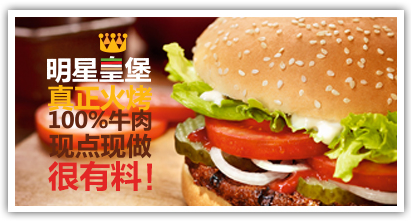
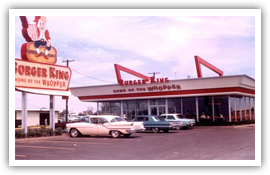
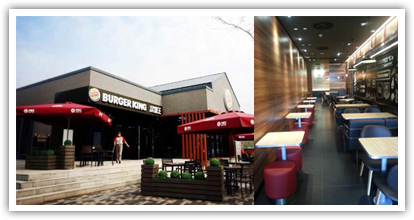

源自1954年的传承
.png) 故事发生在1954年，两位美食家James W. McLamore 和 David Edgerton最初的想法其实很简单，就是将更多美味，更高品质，价格合理的汉堡带给每一位顾客。带着对美食的追求和热情，他们想要将火焰烧烤的精华灌注于每一个汉堡中。超过370度高温火烤，快速锁住肉质的汁水，散发一种独特的香味，与鲜蔬面包搭配，这种方法在当时的美国快餐食品中并不多见。同年他们的新概念汉堡餐厅创立，秉承美味才是王道的理念汉堡王品牌由此诞生。
故事发生在1954年，两位美食家James W. McLamore 和 David Edgerton最初的想法其实很简单，就是将更多美味，更高品质，价格合理的汉堡带给每一位顾客。带着对美食的追求和热情，他们想要将火焰烧烤的精华灌注于每一个汉堡中。超过370度高温火烤，快速锁住肉质的汁水，散发一种独特的香味，与鲜蔬面包搭配，这种方法在当时的美国快餐食品中并不多见。同年他们的新概念汉堡餐厅创立，秉承美味才是王道的理念汉堡王品牌由此诞生。
皇堡的诞生
在汉堡成功销售了一段时间后，我们的招牌汉堡“皇堡”在1957年横空出世。在融入了带着火烤香气的牛肉饼和美味可口的原料后，“皇堡”以它多样的口味和它大到需要两只手才能拿下的尺寸，在当时的市场受到热力追棒，掀起了汉堡界的一阵浪潮。


汉堡王风靡全球
拥有60多年历史的汉堡王，是全球大型连锁餐饮企业，截止至2016年上半年，汉堡王在全球100多个国家及地区经营着超过15000家门店，并且这个数字还在不断扩大。汉堡王最经典产品——皇堡，带着火烤的烙印，汁满料足，拥有221,184种“我选我味”，每年销售2亿个，已是受全世界欢迎的汉堡之一。
60年的火烤传承
1954年
汉堡王公司诞生于美国佛罗里达州的迈阿密,由James Mclamore 和David Egderton 两位共同创立 ,从此火烤牛肉开始了他的传奇之旅
1957年
汉堡王的招牌产品，皇堡诞生
1963年
汉堡王在波多黎开了第一家海外餐厅
2005年
汉堡王正式进入中国,餐厅位于上海静安寺
2012年
汉堡王全球重返纽约证券交易所上市交易,股票代码为“BKW”
截止至2016年上半年
已经遍布全球100多个国家及地区，拥有超过15000家门店
汉堡王中国
汉堡王中国除了传承了这个品牌风靡全球的成功之道之外，更升级了顾客在餐厅的用餐体验并推出了适合中国消费者口味的美味产品，使之同时具有“快餐厅”和“休闲餐厅”的特色和优势，即快餐厅的速度，便捷和面向大众的价位，以及休闲餐厅的时尚舒适的环境和优质美味的食物。 汉堡王中国自2012年获得新的注资之后，大大加快了中国市场的开店速度和城市布局，并同时秉承“美味才是王道”和“顾客为王”的经营理念，致力于每天为更多的中国顾客提供更美味的食物、更好的服务和更休闲舒适的用餐体验。 在中国的发展足迹
.png)
1980年
正式进入香港，餐厅位于旺角西
1990年
进入台湾，餐厅位于台北中影文化城
2012年
汉堡王首登中国大陆舞台，第一家餐厅位于上海静安寺
2005年
汉堡王中国获得新注资,并在中国爆发性发展
截止至2016年上半年
已进驻了100多个城市，门店突破500家